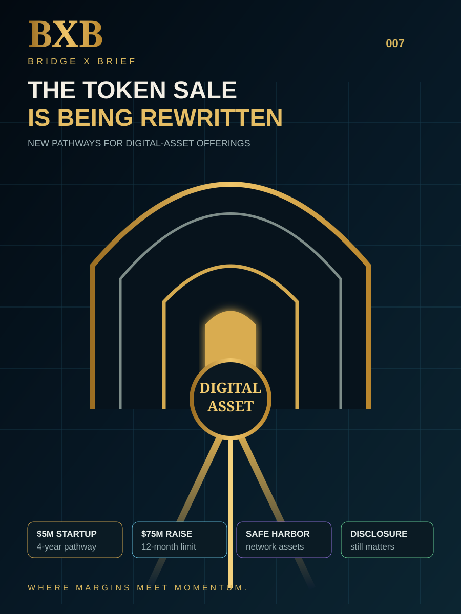

Intelligence Library
Every edition.
One record.
The permanent Bridge X Brief archive. Every issue that has ever published remains available here, and this record grows with every new edition.
BXB
Bridge X Brief
Intelligence That Builds the Future
Intelligence That Builds the Future
008
Institutional Interoperability
Quant Is Winning. Does QNT Capture Value?
Institutional traction meets the token-value-capture test.
September 24, 2026

BXB
Bridge X Brief
Intelligence That Builds the Future
Intelligence That Builds the Future
007
Digital-Asset Capital Formation
The Token Sale Is Being Rewritten
New framework. New pathways. New opportunity.
August 24, 2026

BXB
Bridge X Brief
Intelligence That Builds the Future
Intelligence That Builds the Future
006
Payment Infrastructure
Your Bank Deposit Is Going On-Chain
The bank stays. The rails change.
August 2026
BXB
Bridge X Brief
Intelligence That Builds the Future
Intelligence That Builds the Future
005
Market Structure
The CLARITY Act Reaches the Senate Floor
America's digital-asset rulebook is closer—but not complete.
August 2026

BXB
Bridge X Brief
Intelligence That Builds the Future
Intelligence That Builds the Future
004
Settlement Infrastructure
The Asset Moved. Did Settlement?
Ownership, payment, identity and legal finality must move together.
July 2026
BXB
Bridge X Brief
Intelligence That Builds the Future
Intelligence That Builds the Future
003
DeFi Risk & Capital Efficiency
One Position. Three Jobs. Four Risks.
Capital efficiency and hidden leverage are closer than they look.
July 2026

BXB
Bridge X Brief
Intelligence That Builds the Future
Intelligence That Builds the Future
002
Identity Infrastructure
Identity Is the First Financial Rail
Tokenized finance cannot scale on assets alone.
July 2026
BXB
Bridge X Brief
Intelligence That Builds the Future
Intelligence That Builds the Future
001
Digital-Asset Regulation
Two Roads. One Financial System.
GENIUS, CLARITY, stablecoins—and the infrastructure connecting Main Street to Wall Street.
July 2026